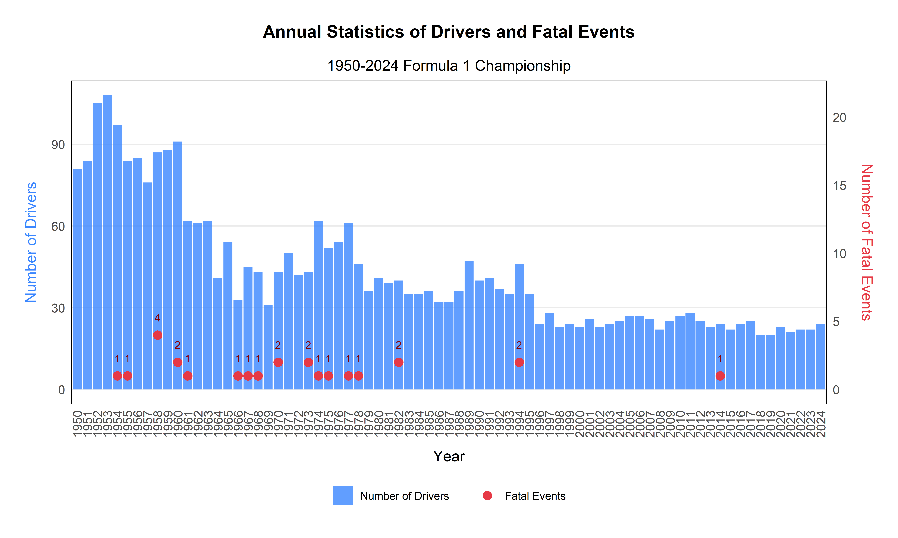

Code
# Prepare annual driver and fatality data
annual_driver_data <- dataOK %>%
group_by(year) %>%
summarize(
NumberDrivers = n_distinct(driver.name),
NumberFatalEvent = sum(driver.fatal == 'Death', na.rm = TRUE)
) %>%
mutate(year = factor(year))
# Create the visualization
annual_driver_plot <- ggplot(annual_driver_data, aes(x = year)) +
# Bar chart - Number of drivers
geom_bar(aes(y = NumberDrivers, fill = "Number of Drivers"), stat = 'identity', alpha = 0.8) +
# Points - Fatal events
geom_point(aes(y = NumberFatalEvent * 5, color = "Fatal Events"),
data = filter(annual_driver_data, NumberFatalEvent > 0), size = 3) +
# Add labels for fatal events
geom_text(aes(y = NumberFatalEvent * 5 + 5, label = NumberFatalEvent),
data = filter(annual_driver_data, NumberFatalEvent > 0),
color = "darkred", size = 3, vjust = 0) +
# Add labels
labs(title = "Annual Statistics of Drivers and Fatal Events",
subtitle = "1950-2024 Formula 1 Championship",
x = "Year",
y = "Number of Drivers") +
# Set secondary y-axis for fatal events
scale_y_continuous(sec.axis = sec_axis(~./5, name = "Number of Fatal Events")) +
# Set colors
scale_fill_manual(values = c("Number of Drivers" = "#3a86ff")) +
scale_color_manual(values = c("Fatal Events" = "#e63946")) +
# Optimize theme
theme_minimal() +
theme(
plot.title = element_text(hjust = 0.5, size = 14, face = "bold", margin = margin(b = 15)),
plot.subtitle = element_text(hjust = 0.5, size = 12),
axis.title.x = element_text(size = 12, margin = margin(t = 10)),
axis.title.y = element_text(size = 12, margin = margin(r = 10), color = "#3a86ff"),
axis.title.y.right = element_text(size = 12, margin = margin(l = 10), color = "#e63946"),
axis.text = element_text(size = 10),
axis.text.x = element_text(angle = 90, vjust = 0.5, hjust = 1),
legend.position = "bottom",
legend.title = element_blank(),
panel.grid.minor = element_blank(),
panel.grid.major.x = element_blank(),
panel.border = element_rect(color = "black", fill = NA, linewidth = 0.5),
plot.margin = margin(20, 20, 20, 20)
)
# Display the plot
annual_driver_plot